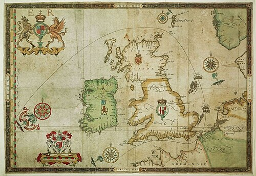
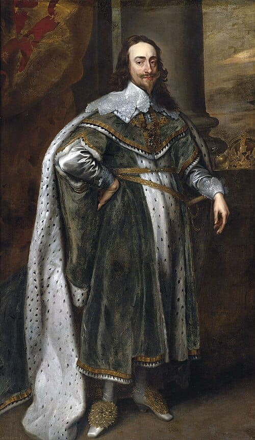
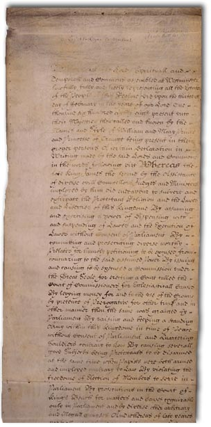

Complete Unit
KS3: Early Modern World & Global Encounters (1450–1750)

Course Textbook
Enquiry: How 'global' was Britain's transformation between 1450 and 1750?
| Lesson 1: Who held global power in 1450? | |
| Lesson 2: How did religious conflict trigger global exploration (1517–1588)? | |
| Lesson 3: Trade or takeover: How did early encounters turn into empire? | |
| Lesson 4: James I and the Gunpowder Plot: Why was religious division so volatile? | |
| Lesson 5: Who controlled Britain? The Ideological Battle | |
| Lesson 6: Who controlled Britain? The Economic Shift | |
| Lesson 7: What were the mechanics of the Transatlantic Slave Trade? | |
| Lesson 8: How did enslaved Africans resist the Transatlantic Slave Trade? | |
| Lesson 9: How 'modern' was Britain by 1750? (Synthesis & Assessment) |
The Odd One Out: Select THREE terms that share a close historical connection. Identify which ONE remaining term is the 'Odd One Out' in this lesson, and explain your historical reasoning:


[1.1] If an alien visitor had arrived on Earth in the year 1450, Western Europe would never have been mistaken for the center of the world. In truth, the European subcontinent appeared as an impoverished, cold, and culturally isolated periphery clinging to the western rim of Eurasia. While later Victorian imperialists claimed Europe had always been destined to rule the globe, the mid-fifteenth-century reality was one of profound weakness. England and France were economically ruined and socially exhausted after the brutal hundred-year conflict of the Hundred Years’ War, which concluded in 1453 with England losing virtually all its continental territories.
[1.2] Furthermore, European populations were still reeling from the demographic shock of the Black Death (1348–1350), which had eliminated over a third of the workforce and left entire villages abandoned. The vast majority of the European population—over 90 percent—were illiterate agricultural peasants bound to rural manors. An ordinary peasant family inhabited a dark, smoky, single-room hovel fashioned from wattle and daub (interwoven hazel sticks smeared with mud, straw, and horse dung) beneath a damp thatch roof. To survive bitter winters, families shared their dirt floors with livestock, including pigs, sheep, and oxen, enduring persistent infestations of lice and fleas. Their daily diet was monotonous and nutritionally precarious, consisting almost entirely of 'pottage'—a thick, unseasoned stew of boiled cabbage, peas, and oats (Source A).
[1.3] Most ordinary Europeans never journeyed more than five miles beyond their village parish across their entire lifetimes. Western European kingdoms possessed negligible reserves of precious silver or gold bullion, operated no advanced manufacturing industries, and produced almost nothing that merchants in Asia or Africa desired to purchase. Cut off from the great intellectual and scientific centers of the Islamic world and Asia, Western Europe in 1450 was an insecure, inward-looking fringe.
Q1. Using paragraphs [1.1]–[1.3], analyze the chain of catalysts that locked Western Europe into rural isolation before 1450.
[2.1] Although European peasants laboured in localized poverty, aristocratic elites, monarchs, and the Catholic Church possessed an insatiable appetite for eastern luxuries. Wealthy Europeans craved Chinese silks for vestments, porcelain for banquets, and, above all, exotic Asian spices: black pepper from the Malabar coast of India, cloves from the Moluccas, and cinnamon from Ceylon. These spices were essential not merely as status symbols, but to mask the foul stench of spoiled meat during long winters and to formulate medicines. For centuries, these valuable commodities travelled thousands of miles across Central Asia via the trans-continental Silk Roads, ending at the great Christian imperial capital of Constantinople.
[2.2] However, directly straddling the trade junction between Europe and Asia stood the dynamic, expanding superpower of the Islamic world: the Ottoman Empire. Under the brilliant leadership of 21-year-old Sultan Mehmed II, the Ottomans mobilized an army of over 80,000 soldiers and revolutionized siege warfare. Mehmed commissioned Hungarian master gunsmith Orban to cast colossal bronze super-cannons—weapons over twenty-six feet long capable of hurling 1,200-pound granite cannonballs. On 29 May 1453, Ottoman artillery breached the ancient, multi-layered Theodosian Walls. Constantinople fell, bringing a traumatic end to the 1,100-year-old Christian Byzantine Empire.
[2.3] Sultan Mehmed II transformed the fallen city into Istanbul, the cosmopolitan jewel and capital of the Ottoman Empire (Source B). By capturing Constantinople and the Bosporus Straits, the Ottomans seized absolute control over the maritime and overland gateways connecting Europe to the Black Sea and Asian trade networks. The Ottoman Sultans imposed heavy customs tariffs on Christian merchants and frequently barred European ships from transit. For mercantile city-states like Venice and Genoa, and emerging monarchies like Portugal and Spain, the Mediterranean was transformed into a fortified Ottoman lake. Western Europe was commercially suffocated, forcing ambitious monarchs to contemplate an audacious, terrifying alternative: sailing west into uncharted oceanic depths.
Q2. Using paragraphs [2.1]–[2.3], evaluate and rank the four decisive drivers that forced European monarchs into the Atlantic.
[3.1] While Western Europeans struggled on the margins, global wealth, technology, and cultural power were concentrated in Africa and Asia. In West Africa, sophisticated imperial polities dominated international trade corridors. The Empire of Mali and the rising Songhai Empire controlled the trans-Saharan gold and salt networks. In 1324, Malian Emperor Mansa Musa embarked on his legendary hajj pilgrimage to Mecca, accompanied by tens of thousands of retainers and dozens of camels laden with pure gold. Mansa Musa spent and gifted so much gold in Cairo that he caused massive regional inflation, depressing the global price of gold for over a decade. European mapmakers were so awed that the 1375 Catalan Atlas depicted Mansa Musa seated upon an opulent throne holding a colossal golden orb (Source C), declaring Mali the wealthiest kingdom in the world.
[3.2] Further south in the rainforests of modern Nigeria, the Kingdom of Benin developed an urban metropolis protected by the Benin Moats—an astronomical network of earthen ramparts and defensive ditches extending over 10,000 miles, four times longer than the Great Wall of China. Under the divine monarch (the Oba), Benin metalworkers perfected advanced metallurgical lost-wax bronze casting, producing regal portrait heads and decorative brass plaques of exquisite artistic sophistication (Source D) that rivalled the finest Renaissance sculpture.
[3.3] At the eastern extremity of Eurasia lay Ming Dynasty China—the undisputed industrial, economic, and technological colossus of the early modern world. With a population exceeding 100 million citizens, Ming China produced the finest porcelain, woven silk, and cast-iron implements on earth. China had invented gunpowder, paper money, the magnetic mariner’s compass, and movable-type printing centuries before Europe. Between 1405 and 1433, Ming Admiral Zheng He commanded seven titanic imperial 'Treasure Fleets' across the Indian Ocean. Zheng He’s flagship measured over 400 feet in length and featured four decks carrying 500 men—dwarfing Christopher Columbus’s flagship Santa Maria (a modest 60-foot vessel) launched half a century later. Zheng He’s voyages established Chinese diplomatic hegemony and tribute across thirty nations from Java to the Persian Gulf and the coast of East Africa.
Q3. Using Source C, Source D, and paragraphs [3.1]–[3.3], contrast European economic marginality with Afro-Asian imperial wealth.
[4.1] The forensic archival evidence of the mid-fifteenth century forces modern historians to confront a profound question: if Western Europe was so thoroughly impoverished, militarily outmatched, and economically peripheral in 1450, how did it eventually come to dominate global empires by the nineteenth century? For over a century, traditional historians promoted a "Eurocentric" interpretation, arguing that European cultural superiority, Christian moral drive, and unique scientific curiosity naturally positioned Europeans to conquer the globe.
[4.2] However, modern global historians (such as Peter Frankopan, Kenneth Pomeranz, and Jack Goody) have dismantled this narrative, demonstrating that Europe’s sudden oceanic expansion was born not out of confident superiority, but out of desperate weakness and existential crisis. In Pomeranz’s "Great Divergence" thesis, Europe in 1450 was locked into ecological bottlenecks—lacking land, timber, and precious metals. When the Ottoman conquest of Constantinople severed the Silk Road, European monarchs were trapped. Spain and Portugal took to the Atlantic not because they were technologically advanced, but because they were barred from the far more lucrative, established trading corridors of the Indian Ocean and the Mediterranean.
[4.3] Furthermore, European explorers only succeeded because they borrowed foundational technologies developed outside Europe: the magnetic compass (invented in China), the lateen triangular sail and astrolabe (developed by Arab and Muslim navigators), and mathematical cartography (refined in Islamic universities). Therefore, the year 1450 was not the dawn of European triumph, but the historical baseline of an impoverished outpost that took desperate gambles on oceanic voyages because it had everything to gain and nothing left to lose.
Q4. Enquiry Essay: "To what extent is it historically accurate to describe Western Europe in 1450 as an impoverished, powerless periphery compared to the great empires of Asia and Africa?"
The Golden Sentence: Choose TWO terms from the word bank. Write ONE grammatically sophisticated, historically accurate sentence connecting them using a causal conjunction (because, although, or consequently):




[1.1] In October 1517, a German monk named Martin Luther nailed his Ninety-Five Theses to the door of Wittenberg Castle Church, condemning corruption in the Roman Catholic Church—particularly the sale of 'indulgences' (certificates promising forgiveness of sins in exchange for cash). Luther argued that salvation came through faith alone and that the Bible, not the Pope in Rome, held supreme spiritual authority. Luther's protest ignited the Protestant Reformation, shattering the religious unity that had bound Western Europe together for a thousand years.
[1.2] Within decades, Northern Europe, including England, Scotland, Scandinavia, and parts of Germany and the Netherlands, broke away from Catholic papal obedience. In England, King Henry VIII passed the 1534 Act of Supremacy, declaring the monarch Supreme Head of the Church of England to secure an annulment from Catherine of Aragon. The Pope responded by excommunicating Protestant rulers and calling upon Catholic monarchs to wage holy war to crush heresy. Europe descended into a century of vicious confessional warfare, civil rebellion, and ideological terror.
[1.3] This religious schism instantly spilled over into oceanic exploration. In 1494, Pope Alexander VI had issued the Treaty of Tordesillas (Source A), audaciously drawing an imaginary meridian line through the Atlantic Ocean: all newly discovered lands to the west were gifted to Catholic Spain, while all lands to the east went to Catholic Portugal. Protestant nations like England and the Dutch Republic rejected this papal decree with outrage. As French and English Protestant monarchs declared: 'Show me the clause in Adam’s will that excludes us from the earth!' Oceanic voyages ceased to be merely commercial ventures; they became an apocalyptic ideological crusade to expand competing versions of Christianity across the globe.
Q1. Using paragraphs [1.1]–[1.3], map how religious schism transformed European exploration into global naval conflict.
[2.1] While England navigated religious turmoil, Catholic Spain established the first global empire in human history. Following Columbus’s 1492 landfall, Spanish conquistadors overthrew the colossal Aztec Empire in Mexico (1521) and the Inca Empire in Peru (1533). In 1545, the Spanish discovered the mountain of Potosí in modern Bolivia—a colossal peak of almost pure silver dubbed the Cerro Rico ('Rich Hill'). Utilizing the brutal forced-labour mita system, the Spanish enslaved hundreds of thousands of indigenous miners, working them in subterranean darkness under toxic mercury fumes to extract thousands of tons of silver.
[2.2] Spanish silver transformed world geopolitics. Twice a year, heavily armed Spanish treasure fleets (the Flota de Indias) hauled silver across the Atlantic to Seville. King Philip II of Spain utilized this vast American bullion to finance the Catholic Counter-Reformation: funding Catholic armies fighting Protestants in France, crushing Dutch rebels in the Netherlands, and constructing the formidable fortress-palace of El Escorial. To European Protestants, Spanish silver represented the lifeblood of Catholic tyranny.
[2.3] For Protestant England under Queen Elizabeth I (who inherited the throne in 1558), Spain represented an existential threat. England was too impoverished to fund a massive standing army or build an empire of its own. Elizabeth therefore turned to state-sanctioned piracy—licensing Protestant privateers known as 'Sea Dogs' (such as Sir Francis Drake and Sir John Hawkins) with official letters of marque to raid Spanish treasure galleons, plunder Caribbean ports, and choke the flow of silver to Philip II’s armies.
Q2. Using Source D and paragraphs [2.1]–[2.3], analyze how royal portraiture was weaponized as religious and imperial propaganda.
[3.1] Between 1577 and 1580, Francis Drake completed the first English circumnavigation of the globe aboard the Golden Hind (Source B). In secret dispatches, Queen Elizabeth had authorized Drake to attack Spanish settlements along the Pacific coast of South America, where the Spanish kept no defenses because they believed no enemy could enter their ocean. Drake captured the Spanish treasure galleon Nuestra Señora de la Concepción (nicknamed the Cacafuego), seizing eighty pounds of pure gold, twenty-six tons of silver bullion, and thirteen chests of silver coins.
[3.2] When Drake returned to Plymouth in September 1580, his cargo was worth over £600,000—more than the entire annual revenue of the English Crown. Half the profit went directly into Queen Elizabeth’s royal treasury, allowing her to pay off England’s national debt and fund Protestant resistance across Europe. In April 1581, Elizabeth openly defied King Philip II by boarding the Golden Hind at Deptford and knighting Drake on his quarterdeck. To Catholic Madrid, this was an intolerable provocation: the Queen of England had formally ennobled a pirate.
[3.3] Enraged by Drake's plunder, the execution of the Catholic Mary, Queen of Scots (1587), and Elizabeth’s support for Dutch Protestant rebels, Philip II launched the Enterprise of England in May 1588: the Spanish Armada (Source C). A colossal fleet of 130 warships carrying 30,000 soldiers sailed to invade England, depose Elizabeth, and force the English people back into the Catholic Church under Spanish rule. Off Gravelines, faster English galleons armed with long-range culverin cannons, combined with ferocious Atlantic gales, scattered and wrecked the Spanish fleet along the rocky coasts of Scotland and Ireland. Less than half the Armada returned to Spain.
Q3. Interrogate the diplomatic protest dispatch sent by King Philip II's ambassador Bernardino de Mendoza to Queen Elizabeth in 1580.
[4.1] The defeat of the Spanish Armada in 1588 has long been celebrated in English nationalist mythology as a miraculous David-versus-Goliath victory, in which God sent 'Protestant winds' to protect a small, freedom-loving island from Catholic tyranny and spark the birth of the British Empire.
[4.2] Modern academic historians reject this simplistic narrative. Traditional historiography portrayed Tudor exploration as heroic patriotism; however, revisionist historians (such as Kenneth Andrews and David Armitage) argue that Elizabethan England’s maritime policy was essentially state-sponsored piracy and maritime terrorism. England did not defeat Spain through technological superiority; the Spanish Empire remained colossally wealthy and retained control of South America for another two centuries. Furthermore, English privateers were motivated far more by raw greed and personal plunder than by religious devotion: Drake and Hawkins fought for fortunes, not theology.
[4.3] Nonetheless, the ideological framework of the Reformation was decisive. By rejecting the Pope’s authority, Protestant England developed a unique imperial ideology: the belief that England had a divine mission to conquer oceanic trade and counter Catholic 'tyranny'. The naval clashes of 1588 laid the psychological and technological foundation for England’s oceanic ambition, establishing the naval tactics, armed galleons, and merchant financing that would birth the British Empire in the seventeenth century.
Q4. Enquiry Essay: "To what extent was the escalation of English exploration in the 16th century driven more by religious conflict than by commercial greed?"
Conceptual Classification: Categorise the terms from the word bank into the two historical boxes below:


[1.1] In the wake of the Spanish Armada’s defeat in 1588, England was eager to secure a permanent share of global oceanic wealth. However, the English Crown faced a crippling obstacle: Queen Elizabeth I and her successor, King James I (who united the crowns of England and Scotland in 1603), had completely exhausted the royal treasury. Unlike the King of Spain, who personally funded colonial conquests with silver fleets, the English monarch could not afford to finance overseas expeditions, fleets, or garrisons.
[1.2] To overcome this financial barrier, London merchants invented a revolutionary capitalist institution: the joint-stock company. Instead of relying on a single wealthy monarch or noble, private investors pooled their capital by purchasing 'shares' in a business venture. If a voyage was shipwrecked or wiped out, an individual shareholder lost only their modest investment, insulating them from total financial ruin. Conversely, if a voyage succeeded, investors shared colossal dividends. The Crown supported these ventures by granting Royal Charters—legal monopolies guaranteeing the company exclusive rights to trade and govern in specific regions of the earth.
[1.3] In 1600, Queen Elizabeth granted a royal charter to the East India Company (EIC), creating a monopoly on Asian maritime trade. Six years later, in 1606, King James I chartered the Virginia Company of London, authorizing private investors to establish settlements in North America. These early overseas ventures were not planned as national military empires; they were commercial, profit-driven corporate enterprises whose primary mandate was to deliver financial returns to London shareholders.
Q1. Using paragraphs [1.1]–[1.3], analyze the sequence through which corporate profit mechanisms led to overseas colonization.
[2.1] In May 1607, three Virginia Company ships carrying 104 men and boys landed on a swampy peninsula in the Chesapeake Bay, founding Jamestown—the first permanent English settlement in North America (Source A). The venture was an immediate catastrophic failure. The settlers—a mix of wealthy 'gentlemen' who refused to perform manual labour and goldsmiths sent to find non-existent gold—built their wooden fort in a mosquito-infested swamp where the water was brackish and contaminated with typhoid and dysentery. Within six months, over half the colonists were dead of disease and malnutrition.
[2.2] The colony survived exclusively because of the sophisticated indigenous population that surrounded them: the Powhatan Confederacy, an alliance of over thirty Algonquin-speaking tribes commanded by the paramount chief, Wahunsenacawh (known to the English as Chief Powhatan). Numbering over 15,000 people, the Powhatans possessed fertile agricultural villages producing surplus maize, beans, and venison. Chief Powhatan faced a profound dilemma: should he wipe out the vulnerable European intruders, or utilize them as trading partners? Powhatan decided to incorporate the English, exchanging corn for English iron axes, copper kettles, and glass beads, which enhanced his regional political prestige.
[2.3] However, when the harsh winter of 1609 arrived (the 'Starving Time'), crops failed and English demands for food turned violent. Settlers were reduced to eating horses, dogs, rats, shoe leather, and, in several documented cases, human corpses from graves. Outraged by English theft, Chief Powhatan laid siege to the fort. By the spring of 1610, barely sixty of the 500 colonists had survived. Peace was only restored in 1614 when the English kidnapped Chief Powhatan’s favorite daughter, Pocahontas (Source B), who was baptized as a Christian and married English settler John Rolfe.
Q2. Evaluate the calculated geopolitical dilemma confronting Chief Powhatan as English settlers established Jamestown.
[3.1] In 1612, John Rolfe successfully cross-bred native Virginian tobacco with sweet Caribbean tobacco seeds, producing an aromatic cash crop that ignited an immediate sensation in London society. King James I despised smoking, famously publishing a pamphlet in 1604 titled A Counterblaste to Tobacco, condemning it as 'a custom loathsome to the eye, hateful to the nose, harmful to the brain, and dangerous to the lungs.' Yet the financial profits were staggering: tobacco sold in London for up to five shillings a pound, yielding immense wealth for Virginia Company investors.
[3.2] The 'Tobacco Boom' radically transformed the nature of English colonization from commercial trade to aggressive territorial conquest. Tobacco was an extraordinarily soil-exhausting crop that rapidly depleted nitrogen, requiring planters to constantly clear new fertile land every three to five years. English colonists no longer wanted to trade with the Powhatan for food; they wanted the Powhatans’ cleared, prime agricultural riverfront land. Settlers seized tribal farming plots, burned native villages, and cut down sacred forests to plant thousands of acres of tobacco.
[3.3] Following the deaths of Chief Powhatan and Pocahontas, Powhatan's brother, Opechancanough, recognized that the English intended to conquer the entire Chesapeake basin. On the morning of 22 March 1622, Powhatan warriors launched a coordinated surprise assault across hundreds of miles of plantations (the 1622 Indian Massacre), killing 347 English settlers—nearly a third of the colony’s population. The English response was merciless: adopting a strategy of total war, settlers poisoned native negotiation feasts, destroyed indigenous corn supplies to induce winter starvation, and systematically drove surviving tribes off their ancestral lands. By 1624, King James dissolved the bankrupt Virginia Company, transforming Virginia into a direct royal colony dedicated to cash-crop plantation agriculture.
Q3. Using Source A, Source B, and paragraphs [3.1]–[3.3], cross-reference English corporate propaganda with indigenous archival reality.
[4.1] The traumatic history of Jamestown establishes the core debate surrounding early modern British imperialism: did the British Empire expand 'accidentally' through peaceful merchant trade, or was it an inherently violent, predatory conquest from its very inception?
[4.2] The "Commercial Evolution" Historical School (associated with nineteenth-century imperial historians such as J.R. Seeley) argues that the British Empire was acquired 'in a fit of absence of mind.' They emphasize that neither Elizabeth I nor James I planned a territorial empire. Settlers sailed as private commercial merchants, looking to barter goods rather than subjugate foreign peoples. In India, the East India Company operated for over a century purely as humble traders in fortified coastal factories (Source C & Source D), bowing before powerful Mughal Emperors. In their view, territorial conquest only occurred later, reluctantly, when commercial outposts were threatened by native warfare or rival European powers.
[4.3] Conversely, The "Predatory Conquest" Historical School (championed by post-colonial historians such as Shashi Tharoor and Roxanne Dunbar-Ortiz) argues that the capitalist joint-stock model was intrinsically exploitative. From the moment the Virginia Company received its royal charter, it laid legal claim to lands that already belonged to sovereign indigenous nations. Once a profitable cash crop like tobacco was discovered, commercial contracts were discarded in favor of total war, broken treaties, and ethnic cleansing. In this view, trade was never an alternative to empire; it was merely the opening wedge of imperial dispossession.
Q4. Enquiry Essay: "To what extent did early English overseas settlements transform from peaceful commercial trading ventures into predatory colonial conquests?"
Spot the Deliberate Error: Read the statement below. One historical fact or vocabulary concept has been deliberately falsified. Underline the error and explain the accurate historical reality below:


[1.1] In March 1603, Queen Elizabeth I died without leaving an heir, bringing the Tudor dynasty to an end. To ensure a peaceful transition, the English political elite invited King James VI of Scotland (the son of the executed Catholic Mary, Queen of Scots) to take the throne as King James I of England, uniting the crowns of England, Scotland, and Ireland (Source A). For England's persecuted Roman Catholic minority, James's accession sparked intense optimism. James's wife, Queen Anne of Denmark, was widely believed to have secretly converted to Catholicism, and James had initially promised during his journey south that he would not 'persecute any that will be quiet and give an outward obedience to the law.'
[1.2] Under Elizabeth, Catholics had lived under severe state oppression. Anyone who refused to attend Protestant Church of England Sunday services was labelled a recusant and slapped with crushing fines of £20 per month—a colossal sum that bankrupted Catholic families. Catholic priests were treated as traitors; any priest discovered on English soil was hanged, drawn, and quartered. Catholic gentry were forced to build intricate secret hiding spaces, known as 'priest holes' (masterminded by Jesuit carpenter Nicholas Owen), behind false fireplaces and double walls to hide fugitive priests during armed nighttime raids by government 'pursuivants' (priest hunters).
[1.3] However, Catholic hopes of Jacobean toleration were swiftly shattered. Fearing a backlash from powerful Puritan MPs in Parliament, James reversed his lenient stance in February 1604, ordering all Catholic priests to leave the kingdom within four weeks and reinstating the full enforcement of recusancy fines. For a group of passionate, desperate Catholic gentry led by thirty-two-year-old Robert Catesby, legal political avenues were closed. Convinced that peaceful compromise was impossible and that the English Catholic community faced total annihilation, Catesby began recruiting trusted comrades for an act of catastrophic violence.
Q1. Using paragraphs [1.1]–[1.3], trace the escalation of religious tension that culminated in the Gunpowder Plot.
[2.1] In May 1604, Catesby assembled his inner circle at the Duck and Drake inn in London (Source B). His plot was extraordinarily radical: not merely to assassinate the King, but to orchestrate a total decapitation strike against the entire English political and religious establishment. The conspirators planned to blow up the House of Lords during the State Opening of Parliament, annihilating King James, Queen Anne, nine-year-old Prince Henry, the Privy Council, the Protestant bishops, and the entire House of Commons in a single massive detonation.
[2.2] Once the government was obliterated, the conspirators intended to launch an armed Catholic uprising in the Midlands, capture James's nine-year-old daughter, Princess Elizabeth, install her as a puppet Catholic queen, and restore England to the Roman Catholic faith. To execute the demolition, Catesby enlisted Guy (Guido) Fawkes, a battle-hardened Yorkshire Catholic who had spent a decade fighting for the Catholic Spanish army in the Netherlands and possessed expert knowledge of military explosives.
[2.3] In early 1605, conspirator Thomas Percy leased a coal cellar located directly beneath the House of Lords chamber. Under cover of darkness, Fawkes smuggled thirty-six heavy barrels of gunpowder—amounting to approximately 2,500 kilograms of high-grade explosive—into the cellar, concealing them beneath piles of iron bars, heavy firewood, and coal (Source C). The force of this quantity of powder would have pulverized the Palace of Westminster, shattered windows across half a mile of London, and instantly incinerated over five hundred people. All was set for the delayed opening of Parliament on 5 November 1605.
Q2. Using paragraphs [2.1]–[2.3], evaluate and rank the four primary drivers behind the Gunpowder Treason.
[3.1] As the conspiracy expanded to thirteen men to finance horses and weapons for the Midlands rebellion, its secrecy collapsed. Several conspirators grew tormented by conscience: dozens of Catholic lords would be attending the State Opening and would die in the explosion alongside Protestants. On the evening of 26 October 1605, Lord Monteagle—a prominent Catholic peer—was dining at his house in Hoxton when an unknown messenger handed his servant an anonymous, cryptic letter (Source D). The letter warned: 'I would advise you as you tender your life to devise some excuse to shift of your attendance at this parliament... for though there be no appearance of any stir, yet I say they shall receive a terrible blow this parliament and yet they shall not see who hurts them.'
[3.2] Monteagle rushed the letter immediately to Whitehall, placing it in the hands of King James’s brilliant, ruthless spymaster: Secretary of State Robert Cecil, Earl of Salisbury. Rather than raiding the cellar immediately, Cecil waited until the night of 4 November—allowing the plot to mature fully so the conspirators could be caught red-handed with the physical evidence. Around midnight on 4 November, royal guards led by magistrate Sir Thomas Knyvett searched the cellars beneath the House of Lords. They discovered Guy Fawkes standing watch, dressed in boots and spurs, carrying three slow-burning matches, a pocket watch, and a dark lantern. Behind the firewood lay thirty-six barrels of powder.
[3.3] Fawkes was dragged to the Tower of London. Initially identifying himself as 'John Johnson', a servant, he defiantly told the King's inquisitors that he intended to 'blow the Scots back into their native mountains.' On 6 November, King James signed a royal warrant authorizing his interrogators to use torture: 'The gentler tortures are to be first used unto him, et sic per gradus ad ima tendatur [and so by degrees proceed to the depths].' Fawkes was strapped to the rack, a horrific wooden machine that stretched the victim’s joints until ligaments tore and shoulders dislocated. After four days of excruciating torture, a broken Fawkes revealed his real name and the names of his co-conspirators. His signature on his final confession—a trembling, barely legible scrawl reading 'Guido'—stands as grim archival proof of state agony. On 30 and 31 January 1606, Fawkes and surviving conspirators were publicly executed at Westminster by hanging, drawing, and quartering.
Q3. Interrogate the exact wording of the anonymous Monteagle Letter delivered on 26 October 1605.
[4.1] For four centuries, 5 November has been marked across Britain with bonfires, fireworks, and the burning of Guy Fawkes effigies, celebrating the miraculous preservation of the Protestant monarchy and Parliament from Catholic treason.
[4.2] However, historians remain intensely divided over the true nature of the conspiracy. The "Orthodox" Historical School (supported by Antonia Fraser and Mark Nicholls) maintains that the Gunpowder Plot was a genuine, self-initiated terrorist conspiracy conceived and executed by desperate, fanatical Catholic gentlemen. Forensic evidence, including gunpowder supplier records, foreign mercenary records, and the conspirators' own unforced statements during their trial, proves that Catesby conceived the plan and that Fawkes acquired the explosives independently.
[4.3] Conversely, The "Entrapment / State Manipulation" School (advanced by Francis Edwards and revisionist critics) argues that King James’s spymaster, Robert Cecil, was fully aware of the plot months before the Monteagle Letter was delivered. In this view, Cecil operated a vast espionage network of double agents and paid informants. Cecil deliberately allowed the conspirators to buy massive quantities of government-controlled gunpowder and lease the undercroft, staging the 'discovery' of the Monteagle Letter and the midnight cellar raid to maximize public terror. By uncovering a monstrous Catholic conspiracy, Cecil eliminated moderate Catholic sympathizers at court, guaranteed massive parliamentary tax subsidies for King James, and secured the complete legislative subjugation of English Catholicism for the next two centuries.
Q4. Enquiry Essay: "Was the 1605 Gunpowder Plot primarily a genuine Catholic terrorist conspiracy, or a crisis manufactured and manipulated by the state to destroy English Catholicism?"
The Odd One Out: Select THREE terms that share a close historical connection. Identify which ONE remaining term is the 'Odd One Out' in this lesson, and explain your historical reasoning:



[1.1] In 1625, Charles I succeeded his father, James I, inheriting the crowns of England, Scotland, and Ireland (Source A). Charles possessed a rigid, uncompromising personality and was an ardent believer in the Divine Right of Kings—the theological doctrine that monarchs are appointed directly by God Almighty and are accountable to no earthly power, law, or parliament. Charles believed that for MPs to challenge his royal commands was not merely political treason, but blasphemy against God.
[1.2] Relations between King and Parliament collapsed rapidly over money and religion. When Parliament refused to grant Charles taxes without redress of grievances, Charles dissolved Parliament and ruled for eleven years (1629–1640) without summoning MPs—a period critics dubbed the 'Eleven Years’ Tyranny'. To raise money illegally, Charles revived archaic taxes, most notably Ship Money—a tax traditionally levied on coastal counties during wartime to fund the navy, which Charles unlawfully imposed on inland counties during peacetime. MPs like John Hampden refused to pay, declaring taxation without parliamentary consent was theft.
[1.3] The crisis turned military when Charles and his Archbishop of Canterbury, William Laud, attempted to force an English-style Anglican Prayer Book upon Presbyterian Scotland in 1637. The Scots rebelled, signing the National Covenant and invading northern England. Desperate for money to pay the Scots an indemnity, Charles was forced to summon the Long Parliament in 1640. Instead of granting taxes, MPs arrested the King’s chief minister, abolished illegal courts, and demanded control over the royal army. On 4 January 1642, Charles committed an unprecedented breach of parliamentary privilege, marching 400 armed guards into the House of Commons chamber to arrest five leading MPs for treason. The MPs had escaped by boat down the Thames; the Speaker famously defied the King, declaring: 'I have neither eyes to see nor tongue to speak in this place, but as the House is pleased to direct me.' War was inevitable.
Q1. Using paragraphs [1.1]–[1.3], evaluate the competing historical explanations for why war erupted in 1642.
[2.1] In August 1642, Charles raised his royal standard at Nottingham, plunging Britain into the English Civil War. The country fractured along religious, regional, and social lines: the Royalists ('Cavaliers'), comprising conservative nobility, gentry, and Anglicans/Catholics based in the north and west, supported the King; Parliamentarians ('Roundheads'), comprising wealthy merchants, yeoman farmers, and radical Puritans based in London and the south-east, fought for parliamentary sovereignty.
[2.2] The conflict was transformed in 1645 by the creation of the New Model Army, organized by Sir Thomas Fairfax and cavalry commander Oliver Cromwell. Unlike traditional aristocratic militias, the New Model Army was Britain’s first professional, standing national army. Officers were promoted based on battlefield merit and religious zeal rather than noble birth ('I had rather have a plain russet-coated captain that knows what he fights for, and loves what he knows, than that which you call a gentleman,' Cromwell declared). The army crushed the Royalist forces at the decisive Battle of Naseby in June 1645. Charles was captured, but refused to concede defeat, secretly plotting with Scottish royalists to launch a Second Civil War in 1648.
[2.3] For the radical Puritans and officers of the New Model Army, Charles’s treachery in triggering a second war proved that the King was 'a man of blood' whom God demanded must be punished. In December 1648, Colonel Thomas Pride marched troops into the House of Commons, forcibly arresting or turning away over 140 moderate MPs who wished to negotiate with the King ('Pride’s Purge'). The surviving radical minority—dubbed the 'Rump Parliament'—voted to establish an extraordinary High Court of Justice to put King Charles I on trial for high treason (Source B).
Q2. Using Source B and paragraphs [2.1]–[2.3], deconstruct the contemporary visual record of the public regicide.
[3.1] In January 1649, Charles I was brought before the High Court of Justice in Westminster Hall. The indictment, read by Lord President John Bradshaw, declared that Charles, 'trusted with a limited power to govern by and according to the laws of the land... hath out of a wicked design erected and upheld in himself an unlimited and tyrannical power to rule according to his will, for which he hath traitorously and maliciously levied war against the present Parliament and the people.'
[3.2] Charles refused to remove his hat or recognize the authority of the court, interrupting the proceedings by tapping his cane against the floor until its silver head fell off. Charles argued with brilliant constitutional logic: 'I would know by what authority, I mean lawful... I have a trust committed unto me by God, by lawful and ancient descent; I will not betray it to answer a new unlawful authority. Remember I am your King, your lawful King... a King cannot be tried by any superior jurisdiction on earth.' Because Charles refused to enter a plea, the court found him guilty as a 'tyrant, traitor, murderer, and public enemy to the good people of this nation.'
[3.3] The Death Warrant of Charles I was signed and sealed by fifty-nine commissioners ('regicides'), headed by Bradshaw, Lord Grey, and Oliver Cromwell (Source C). On the bitterly cold morning of Tuesday, 30 January 1649, Charles walked through the magnificent Banqueting House beneath Peter Paul Rubens’s ceiling paintings celebrating divine kingship, stepping out onto a black-draped scaffold. He wore two shirts so the crowd would not see him shiver and mistake it for cowardice. In his final speech, Charles declared: 'For the people, truly I desire their liberty and freedom as much as anybody whomsoever; but I must tell you, that their liberty and freedom consists in having government, those laws by which their life and their goods may be most their own. It is not for having a share in government, sir; that is nothing pertaining to them. A subject and a sovereign are clean different things.' Moments later, the executioner severed his head with a single blow.
Q3. Interrogate the decisive sentence from King Charles I’s scaffold speech delivered on 30 January 1649.
[4.1] The execution of Charles I was an unprecedented constitutional earthquake that sent shockwaves across Europe. For the first time in European history, a reigning monarch was publicly tried and beheaded by his own subjects under the color of law, abolishing the monarchy and declaring England a 'Commonwealth and Free State'.
[4.2] The "Constitutional Justice / Whig" Historical School (championed by Thomas Babington Macaulay and Christopher Hill) argues that the trial of Charles I established the foundational modern principle that no ruler is above the law. In their view, Charles was a treacherous tyrant who levied war against his own people, invited foreign Scottish armies onto English soil, and broke his solemn oath. The regicide was an act of revolutionary justice that permanently destroyed absolute divine right monarchy in Britain, paving the way for parliamentary democracy and civil liberties.
[4.3] Conversely, The "Military Coup / Royalist" Historical School (supported by John Morrill and Conrad Russell) demonstrates that the trial was a blatant, illegal military dictatorship. The High Court was created only after Pride’s Purge violently expelled three-quarters of the elected House of Commons. The House of Lords unanimously rejected the trial, leaving a tiny clique of military commanders to sign the death warrant. In this view, Charles was murdered by an extremist religious minority that imposed a grim military dictatorship under Oliver Cromwell, which ordinary English citizens hated so intensely that they joyfully restored the monarchy just eleven years later in 1660.
Q4. Enquiry Essay: "To what extent was the execution of King Charles I in 1649 a principled act of constitutional justice rather than an illegal military murder?"
The Golden Sentence: Choose TWO terms from the word bank. Write ONE grammatically sophisticated, historically accurate sentence connecting them using a causal conjunction (because, although, or consequently):

[1.1] Following the execution of Charles I, Oliver Cromwell ruled as 'Lord Protector', imposing a strict Puritan military dictatorship that banned theater, Christmas celebrations, and dancing. Following Cromwell’s death, the Protectorate collapsed, and in 1660, the English political nation joyfully restored the monarchy under Charles I’s exiled son, King Charles II (the 'Merry Monarch'). While the Restoration brought stability, constitutional tensions resurfaced when Charles II died in 1685 and was succeeded by his openly Roman Catholic brother, King James II.
[1.2] James II alienated the Protestant establishment by appointing Catholic officers to the army and royal universities in defiance of the law, attempting to rule without Parliament. When James’s second wife gave birth to a Catholic son and male heir in June 1688, threatening a permanent Catholic dynasty, seven prominent English nobles ('the Immortal Seven') dispatched a secret invitation to the Dutch Protestant ruler, William of Orange, and his English wife, Mary (James II’s Protestant daughter), begging them to invade England and preserve Protestant liberty.
[1.3] In November 1688, William landed in Devon with a massive Dutch invasion fleet. James II’s army deserted him, and the King fled to France, throwing the Great Seal of the Realm into the River Thames. This bloodless transfer of power was dubbed the Glorious Revolution. In 1689, Parliament offered the joint crown to William III and Mary II, but on strict conditions: they were required to accept the landmark Bill of Rights (1689). The Bill of Rights legally ended Divine Right absolutism in Britain: it banned the monarch from suspending laws, raising taxes, or maintaining a standing army in peacetime without parliamentary consent, establishing the foundational modern principle of constitutional monarchy.
Q1. Using paragraphs [1.1]–[1.3], trace the escalation that led from the Restoration to the permanent establishment of parliamentary supremacy.
[2.1] Although William of Orange secured the English throne, he immediately plunged Britain into the Nine Years’ War (1688–1697) against the superpower of Europe: Catholic France under King Louis XIV. Britain faced a colossal financial crisis. France possessed four times the population and five times the national income of Britain; traditional tax revenues from customs and land could cover barely a fraction of the astronomical costs of modern warfare, which required maintaining dozens of 100-gun Royal Navy warships and an army of 90,000 soldiers.
[2.2] To prevent military bankruptcy, Scottish merchant William Paterson and Chancellor of the Exchequer Charles Montagu engineered a radical economic breakthrough: the Financial Revolution. In 1694, Parliament passed the Tonnage Act, incorporating the Bank of England (Source B). A syndicate of 1,268 wealthy merchants and City of London financiers pooled £1.2 million in gold and silver, lending the entire sum to the British government at an annual interest rate of 8 percent. In return, the government granted the Bank of England the exclusive right to issue paper banknotes and manage the government’s debt.
[2.3] This mechanism created the modern National Debt. Previously, European kings borrowed money in their own name; when they died or went bankrupt, they defaulted on loans, meaning bankers charged exorbitant interest rates of 15 to 20 percent. But in Britain, the debt was guaranteed not by a mortal King, but by the permanent authority of Parliament, which guaranteed payment through legally protected tax revenues. Because investors knew the British government would never default, Britain could borrow vast fortunes at ultra-low interest rates of 3 to 4 percent. Britain transformed into the world’s supreme 'fiscal-military state', capable of raising more money for war than any rival empire on earth.
Q2. Using paragraphs [2.1]–[2.3], evaluate and rank the four decisive financial mechanisms that enabled Britain’s global military expansion.
[3.1] The Financial Revolution sparked a colossal commercial boom centered in the City of London. The heartbeat of this new financial universe was the Royal Exchange (Source A), rebuilt in magnificent classical stone following the Great Fire of 1666. Here, hundreds of merchants, sea captains, and brokers gathered daily across dedicated national 'walks' to trade global commodities—Virginia tobacco, Jamaican sugar, Bengal silk, and African gum. Beside the Exchange, London’s vibrant coffeehouses (such as Jonathan’s Coffee House in Exchange Alley and Edward Lloyd’s Coffee House on Lombard Street) evolved into the world's first formal stock exchanges and maritime insurance markets.
[3.2] For centuries, English wealth had been defined entirely by owning agricultural land. Aristocratic lords derived their social status and political power from inherited ancestral country estates, collecting rents from tenant farmers. However, by the 1690s, an entirely new form of wealth emerged: liquid, mobile capital. Investors could buy and sell paper shares in chartered joint-stock companies, government debt bonds, and overseas ventures, generating enormous fortunes within weeks without owning a single acre of soil.
[3.3] This speculative boom culminated in the catastrophic South Sea Bubble of 1720. The South Sea Company, chartered to trade enslaved Africans to Spanish America, took over billions in government debt, inflating share prices from £100 to over £1,000 through rampant market hype and political bribery. When the speculative bubble burst in August 1720, share prices crashed by 85 percent, bankrupting thousands of investors across all levels of society, from cabinet ministers to ordinary clerks and the scientist Sir Isaac Newton (who lost £20,000, lamenting: 'I can calculate the motions of heavenly bodies, but not the madness of people'). To stabilize the economy, Parliament passed the Bubble Act and appointed Sir Robert Walpole, who restored financial stability and became Britain’s first de facto Prime Minister.
Q3. Using Source A and paragraphs [3.1]–[3.3], cross-reference the characteristics of traditional landed wealth against emerging financial capital.
[4.1] The dual transformations of 1688 and 1694—the Glorious Revolution and the Financial Revolution—laid the architectural foundations of the modern British state, establishing a stable constitutional monarchy underpinned by a formidable capitalist economy.
[4.2] The "Whig / Liberal Progress" Historical School (advanced by G.M. Trevelyan and Douglass North) argues that the Glorious Revolution was the decisive foundation of British freedom and economic prosperity. In Douglass North’s Nobel Prize-winning institutional analysis, the 1689 Bill of Rights legally bound the hands of the Crown, establishing private property rights and the rule of law. Because Parliament, dominated by property-owners, controlled taxation, citizens felt safe investing their wealth without fear of royal confiscation. This security of property sparked innovation, made Britain the safest haven for capital in Europe, and created the financial stability that directly enabled the Industrial Revolution.
[4.3] Conversely, The "Radical / Marxist" Historical School (supported by E.P. Thompson and Christopher Hill) argues that the 1688 settlement was a victory not for 'the people', but for a tiny, self-serving oligarchy of wealthy aristocrats and London financial speculators. Less than 5 percent of the British population had the right to vote. Parliament utilized its new supremacy to pass laws defending property at all costs, passing the notorious 'Bloody Code' which made over two hundred property offenses punishable by death. In this view, the Glorious Revolution merely replaced royal tyranny with the ruthless tyranny of capital and the expansion of an empire built on colonial plunder and the Transatlantic Slave Trade.
Q4. Enquiry Essay: "To what extent was the Glorious Revolution and Financial Revolution a triumph for British constitutional freedom rather than a victory for a wealthy commercial oligarchy?"
Conceptual Classification: Categorise the terms from the word bank into the two historical boxes below:


[1.1] Between 1500 and 1807, the Atlantic basin was bound together by a vast, circular oceanic commercial system known as the Triangular Trade. The system operated across three distinct legs. On the First Leg (the Outward Passage), heavily armed British merchant vessels departed from booming Atlantic ports like Bristol, Liverpool, and London. Their holds were packed with industrial manufactured commodities: woolen cloth, brass cooking pans, glass beads, gunpowder, and, above all, hundreds of thousands of cheap flintlock muskets produced in Birmingham workshops.
[1.2] Sailing south along the Atlantic trade winds, these ships arrived along the West African coast (stretching from Senegambia down to the Congo and Angola). Here, European trading enterprises constructed fortified stone outposts known as "slave castles." The preeminent British fortress was Cape Coast Castle on the Gold Coast (modern Ghana, Source A). British company factors bartered their manufactured firearms and brass with local rulers and merchant elites in exchange for captive human beings. This introduced a predatory "gun-slave cycle": African states equipped with British muskets launched militarized raids against inland villages to secure war captives, fully aware that if they failed to deliver prisoners to European ships, their own communities risked being overrun and captured by rival gun-bearing polities.
[1.3] Once delivered to British castles, captive Africans underwent a systematic process of depersonalization. They were stripped naked, examined like livestock by European surgeons, and branded on the chest or shoulder with red-hot irons bearing corporate initials (such as "RAC" for the Royal African Company). Captives were then forced into suffocating, subterranean stone dungeons known as barracoons. Up to a thousand men and women were packed into these pitch-black, unventilated stone vaults without sanitation for weeks or months. When slave vessels arrived, the captives were led through the narrow stone "Door of No Return", forced into canoes through heavy coastal surf, and loaded onto ocean transports.
Q1. Using paragraphs [1.1]–[1.3], trace how British industrial production fueled human commodification on the West African coast.
[2.1] The second leg of the trade—the Middle Passage—was an oceanic nightmare spanning 5,000 miles across the Atlantic that lasted between six and twelve weeks. Slave ship captains operated under two competing commercial strategies: "loose-packing" (carrying fewer captives in hopes of lower mortality) and "tight-packing" (packing as many human bodies as physically possible into the hull, calculating that higher numbers would offset deaths at sea). By the mid-eighteenth century, tight-packing had become the standard economic model across British slave fleets.
[2.2] Below deck, captive men were chained together in pairs by their ankles and wrists with heavy iron shackles, forced to lie flat on their backs or sides upon rough wooden shelving. Headroom between shelves was often less than three feet, making it impossible to sit upright. Temperatures in the unventilated hold frequently exceeded 40°C, and the air was thick with the stench of human perspiration, vomit, and excrement. Epidemics of dysentery ("the bloody flux"), smallpox, and ophthalmia (blinding eye infections) swept through the holds. Captives who refused to eat out of despair were subjected to agonizing force-feeding using the speculum oris, a mechanical iron scissor device that prized open jawbones. Between 12% and 20% of all captives perished during the voyage, their bodies thrown overboard into shark-infested waters.
[2.3] In 1788, the Society for Effecting the Abolition of the Slave Trade commissioned an architectural cross-section of the Liverpool slave ship Brookes (Source B). Rather than presenting an emotional artistic sketch, the committee produced an objective, clinical blueprint showing how 454 men, women, and children were packed onto wooden shelves. Each adult male was allocated a space measuring precisely six feet long by sixteen inches wide—less space than a corpse inside a coffin. The cold, geometric precision of the Brookes diagram shocked the British public, providing indisputable physical proof that the slave trade was an organized system of calculated commercial cruelty.
Q2. Study Source B and paragraphs [2.1]–[2.3]. Identify and analyze the four forensic features of this technical blueprint that exposed the reality of tight-packing.
[3.1] When surviving captives arrived in colonial ports such as Kingston, Jamaica or Bridgetown, Barbados, they were subjected to degrading public sales. The most chaotic and terrifying method was the Scramble (Source C). Buyers paid a flat rate per head, and upon the firing of a naval signal gun, rushed violently into the ship's holding pen with ropes and cords to grab the strongest and healthiest captives. Families were torn apart without hesitation: mothers were separated from weeping children, and husbands from wives, never to see one another again.
[3.2] Those purchased were marched directly to sugar plantations, which operated not as pastoral farms, but as lethal agro-industrial factories. Labour was organized into rigid "gang systems." The First Gang (the strongest men and women) laboured eighteen hours a day during harvest season, digging cane holes and cutting towering sugar cane under the scorching Caribbean sun, driven forward by the overseer’s raw-hide whip. In the boiling house, the work was perilous: cauldrons of molten, bubbling sugar syrup reached scorching temperatures. Fatigued workers feeding cane stalks into iron roller mills frequently had their hands caught; overseers kept iron hatchets nearby to sever trapped limbs before the entire body was pulled into the grinding gears.
[3.3] The demographic reality of Caribbean sugar estates was catastrophic. Rather than preserving the health of their workforce, British absentee plantation owners calculated that it was economically cheaper to work enslaved people to exhaustion and death within seven to ten years and purchase fresh replacements from Africa, rather than incurring the expense of food, medical care, and maternity support. In Jamaica, out of approximately 1.5 million enslaved Africans imported between 1655 and 1807, only 350,000 survived on the island at emancipation. This colossal human sacrifice fueled an unprecedented flood of white sugar, rum, and molasses into British domestic ports, transforming British diets and enriching merchant dynasties.
Q3. Using paragraphs [1.1]–[3.3] and Source C, cross-examine the human costs of commodification against the imperial capital accumulated by Britain.
[4.1] The colossal scale of wealth generated by the Transatlantic Slave Trade and Caribbean sugar production has ignited one of the most fierce debates in modern economic history. For decades, traditional British historians presented the Industrial Revolution as an entirely homegrown triumph of British engineering ingenuity, coal reserves, and Protestant work ethic, largely ignoring the colonial origins of capital.
[4.2] In 1944, Trinidadian historian Dr Eric Williams published his revolutionary work, Capitalism and Slavery. Williams advanced the provocative thesis that the astronomical profits extracted from enslaved labour on Caribbean sugar estates provided the vital liquid capital that directly financed the British Industrial Revolution. Williams demonstrated that slave trade profits built the docks of Liverpool and Bristol, capitalized prominent private banks (such as Barclays and Lloyds), and directly financed pioneering inventors—including James Watt, whose steam engine development was backed by Caribbean plantation fortunes.
[4.3] Modern economic historians (such as David Eltis and Roger Anstey) have refined Williams’s argument. They calculate that pure profits from the slave trade itself represented only 1% to 2% of British national income, arguing that domestic agricultural improvements and domestic demand were the dominant economic drivers. Nevertheless, the modern consensus acknowledges that even if slave profits alone did not single-handedly trigger the Industrial Revolution, the Atlantic slave economy created the indispensable financial networks, naval infrastructure, and global markets that enabled Britain to emerge as the undisputed economic titan of the eighteenth century.
Q4. Enquiry Essay: "To what extent were the mechanics and profits of the Transatlantic Slave Trade the decisive driving force behind Britain’s 18th-century economic transformation?"
Spot the Deliberate Error: Read the statement below. One historical fact or vocabulary concept has been deliberately falsified. Underline the error and explain the accurate historical reality below:


[1.1] For centuries, colonial historians portrayed enslaved Africans as docile, passive victims who accepted their subjugation until benevolent white politicians granted them freedom. Modern historical research decisively shatters this myth, revealing a continuous, dynamic spectrum of resistance. From the moment of capture on the African coast to the sugarcane fields of the Caribbean, enslaved people waged an unceasing struggle to assert their humanity, disrupt colonial profits, and claim freedom through both covert and overt methods.
[1.2] Because armed insurrection was punished with horrific torture, public dismemberment, and death, the most widespread form of resistance was day-to-day covert resistance. Enslaved field hands engaged in calculated work slowdowns, feigned illness or severe injury during critical harvest weeks, and deliberately mishandled expensive machinery. The private journals of Jamaican overseer Thomas Thistlewood (Source A) record repeated instances of enslaved workers jamming heavy iron bolts into the gears of grinding mills to halt boiling operations, hiding hoes in the dense brush, and setting fire to dry sugarcane fields under cover of tropical night.
[1.3] Beyond economic sabotage, the most profound resistance was cultural and spiritual survival. Plantation codes in Jamaica, Barbados, and Virginia sought to strip Africans of their names, languages, and religions, replacing them with English names and complete subordination. Enslaved communities resisted by secretly maintaining West African languages (such as Akan and Yoruba), preserving traditional medicinal knowledge, communicating through coded drumbeats and work songs, and holding clandestine nocturnal spiritual ceremonies known as Obeah or Vodou. By sustaining their cultural memory and community bonds, enslaved people denied plantation masters total control over their minds and spirits.
Q1. Using paragraphs [1.1]–[1.3], trace how resistance evolved across every phase of the Transatlantic slave system.
[2.1] The most formidable armed challenge to British imperial authority in the Caribbean came from the Maroons. In 1655, when an English fleet seized Jamaica from the Spanish, hundreds of enslaved Africans escaped into the island’s impenetrable interior. Over decades, they established fortified, self-governing settlements in the rugged, limestone karst terrain of the Cockpit Country (Source B). Divided into the Leeward Maroons (led by Captain Cudjoe) and the Windward Maroons in the Blue Mountains, these free African warriors successfully resisted British colonial control for nearly a century.
[2.2] The supreme military and spiritual strategist of the Windward Maroons was Queen Nanny, an Ashanti woman renowned for her tactical brilliance and Obeah leadership. Operating from the fortified mountain citadel of Nanny Town, she commanded guerrilla fighters who humiliated well-equipped British infantry. The Maroons mastered jungle camouflage, disguising themselves in living branches and creepers, blending invisibly into the dense foliage until British columns were trapped in narrow gorges. They communicated across vast mountain peaks using the abeng—a modified cow horn that produced complex acoustic signals undetectable to English officers.
[2.3] By 1739, after two decades of humiliating defeats and staggering financial expenditure, the British Governor, Edward Trelawny, conceded that the Maroons could not be militarily conquered. In March 1739, the British Crown took the unprecedented step of signing formal peace treaties with Cudjoe and Nanny. The treaties recognized the Maroons as free, self-governing people, granted them 1,500 acres of sovereign land, and protected them from re-enslavement. However, the treaty included a deeply controversial clause: in exchange for sovereignty, the Maroons agreed to help British authorities suppress future slave uprisings and return new runaway slaves, creating a tragic divide between free Maroons and enslaved plantation labourers.
Q2. Evaluate the agonizing strategic choice faced by Cudjoe and Queen Nanny when British Governor Trelawny offered the 1739 peace treaty.
[3.1] While Maroons fought in the Caribbean mountains, enslaved people in North America launched dramatic armed rebellions. In September 1739, twenty enslaved Angolans initiated the Stono Rebellion in South Carolina, marching toward Spanish Florida while beating drums and shouting "Liberty!" They burned plantations and fought pitched battles before being overwhelmed by militia. In 1760, over 1,000 enslaved people in Jamaica rose under the leadership of an Akan coromantee chief named Tacky, capturing muskets and killing sixty overseers in a six-month guerrilla war that terrorized the planter class.
[3.2] Meanwhile, in the imperial capital of London, a new front of resistance emerged led by formerly enslaved Black intellectuals. In the 1780s, men who had purchased their freedom banded together to form The Sons of Africa—Britain’s first Black political pressure group. Led by figures like Ottobah Cugoano and Olaudah Equiano (Source C), this pioneering group wrote letters to newspapers, petitioned members of Parliament, attended public debates, and actively advised white abolitionists like Granville Sharp and William Wilberforce.
[3.3] In 1789, Equiano published his monumental autobiography, The Interesting Narrative of the Life of Olaudah Equiano, or Gustavus Vassa, the African. The book became an immediate international publishing sensation, running through nine editions across his lifetime. Equiano provided a harrowing, forensic eyewitness testimony of his kidnapping in Igboland (Nigeria), the suffocating horrors of the Middle Passage, and the cruel realities of Caribbean slavery. Equiano embarked on extensive lecture tours across England, Scotland, and Ireland, proving to a fascinated public that Africans possessed extraordinary intellectual, literary, and moral equality. His bestselling narrative converted hundreds of thousands of ordinary Britons to the abolitionist cause.
Q3. Analyze the forensic excerpts from Thomas Thistlewood's plantation diary (Source A) and Equiano's bestselling autobiography (1789).
[4.1] For nearly two centuries, British school textbooks celebrated the abolition of the slave trade (1807) and the abolition of slavery (1833) as triumphs of British moral virtue. In this traditional "Wilberforce-centric" narrative, noble white parliamentarians led by William Wilberforce MP (Source D) awoke the Christian conscience of the British Empire and magnanimously freed millions of helpless slaves.
[4.2] Beginning in the mid-twentieth century, Caribbean historians such as C.L.R. James, Eric Williams, and modern scholars like Sir Hilary Beckles demolished this self-congratulatory myth. Beckles established that the primary engine of abolition was unrelenting African resistance. By the early nineteenth century, enslaved insurrections—such as Bussa's 1816 Rebellion in Barbados and the 1831 Baptist War in Jamaica led by Samuel Sharpe—had rendered Caribbean slavery economically precarious and militarily unsustainable. Planters were terrified that Jamaica would become another independent Black republic like Haiti (where enslaved people had defeated the French army under Toussaint Louverture in 1804).
[4.3] The modern historiographical verdict therefore recognizes a powerful historical convergence. Abolition was not achieved by white politicians alone, nor by armed rebellions in isolation. Rather, constant resistance in the colonies created an unsustainable security crisis, while Black intellectuals like Equiano mobilized British public opinion, creating an irresistible political movement that forced a reluctant Parliament to finally dismantle the slave trade.
Q4. Enquiry Essay: "To what extent was the resistance of enslaved Africans, rather than white parliamentary politicians like Wilberforce, the decisive factor in exposing and challenging the Transatlantic Slave Trade?"
The Odd One Out: Select THREE terms that share a close historical connection. Identify which ONE remaining term is the 'Odd One Out' in this lesson, and explain your historical reasoning:



[1.1] In 1450, English political life was paralyzed by dynastic warfare, weak feudal institutions, and the catastrophic collapse of continental lands. Two centuries later, the seventeenth century subjected the British monarchy to an ideological earthquake. King Charles I’s assertion of absolute Divine Right provoked a bloody Civil War, culminating in his public beheading outside Whitehall in 1649. When the Stuart dynasty was restored and King James II attempted to re-impose Catholic autocracy, Parliament launched the bloodless coup of 1688: the Glorious Revolution. James II fled into exile, and Parliament invited Dutch Prince William of Orange and his wife Mary to assume the throne—strictly upon Parliament's terms.
[1.2] In December 1689, Parliament enacted the Bill of Rights (Source A), a constitutional milestone that permanently reshaped the British state. The Act made it illegal for the Crown to suspend laws, collect taxes without parliamentary consent, or maintain a standing peacetime army without approval. It guaranteed regular parliamentary elections and granted MPs absolute freedom of speech within the chamber. Absolute divine right monarchy was dead, replaced by the world's first enduring constitutional monarchy, establishing a stable legal framework that protected private property and individual contracts.
[1.3] However, this constitutional breakthrough was not a modern democracy. Political power did not belong to ordinary people, but was monopolized by a tiny, wealthy parliamentary oligarchy comprising great landed aristocrats and commercial grandees. Only adult men owning freehold land worth at least 40 shillings a year could vote—representing less than 3% of the British population. Women, the working poor, and religious dissenters were completely excluded from political rights. Furthermore, parliamentary elections were notoriously corrupt: "pocket boroughs" containing fewer than twenty voters were bought and sold like private real estate by aristocratic patrons, while voters were openly bribed with beer, beef, and bank notes.
Q1. Using paragraphs [1.1]–[1.3], trace how violent constitutional upheaval created Britain's 18th-century parliamentary oligarchy.
[2.1] While Britain’s domestic constitution stabilized, its international standing underwent a breathtaking revolution. In 1450, England was an isolated island on the outer periphery of European trade. By 1750, the Kingdom of Great Britain (united with Scotland in the 1707 Act of Union) had transformed into the world's preeminent oceanic and mercantile empire. The engine of this ascendancy was the Royal Navy, which had expanded into a formidable armada of over 250 warships, securing global sea lanes and protecting British merchant convoys from French and Spanish rivals.
[2.2] Underpinning naval power was the Financial Revolution of the 1690s. The foundation of the Bank of England in 1694 and the creation of a National Debt enabled the British government to borrow colossal sums at low interest rates, out-funding continental superpowers like France. London emerged as the financial heart of the globe. The East India Company brought spices, tea, and calico textiles from Bengal, while the Royal African Company and independent slave traders extracted astronomical fortunes in Jamaican sugar and Virginian tobacco (Source B). Marine insurance brokers gathered at Edward Lloyd’s coffeehouse, creating Lloyd’s of London to insure high-risk global maritime voyages.
[2.3] This torrent of global commodities transformed everyday British life through the Consumer Revolution. By 1750, London boasted over 500 bustling coffeehouses, often called "penny universities." For the price of a penny cup of coffee, merchants, journalists, lawyers, and politicians sat shoulder-to-shoulder reading the newly emerging daily newspapers, arguing politics, and debating scientific discoveries. Public opinion had arrived, creating a vibrant, literate urban civic culture that appeared radically modern to foreign visitors.
Q2. Using paragraphs [2.1]–[2.3], evaluate and rank the four decisive drivers of Britain's transformation into a global superpower.
[3.1] Yet beneath the shimmering veneer of constitutional stability, global commerce, and polite coffeehouse debate, mid-eighteenth-century Britain was a society fractured by acute inequality, systemic violence, and urban horror. As thousands of dispossessed rural agricultural labourers flooded into London looking for employment, the imperial metropolis ballooned into a sprawling, filthy city of over 675,000 inhabitants. Devoid of sewers, running water, or refuse collection, crowded tenement slums like St Giles were cesspools of cholera, typhus, and tuberculosis.
[3.2] The social crisis reached catastrophic depths during the Gin Craze (1720–1751). Unregulated, cheap, potent gin flooded the slums, consumed by impoverished men, women, and children seeking escape from misery. In 1751, artist William Hogarth published his savage satirical print, Gin Lane (Source C). Set in the parish of St Giles, the engraving depicts an urban apocalypse: an intoxicated mother allows her baby to tumble headlong over a stair railing, a skeletal balladeer starves to death, and corpses are loaded into coffins beneath a pawnbroker's sign. In 1750, more than 75% of children born in London died before reaching their fifth birthday.
[3.3] Terrified by urban unrest and obsessed with defending their accumulated wealth, the propertied ruling class in Parliament created the Bloody Code. Between 1688 and 1750, the number of capital offenses punishable by public hanging exploded from 50 to over 200. These were not violent crimes: a child could be publicly executed for picking a pocket of goods worth more than five shillings, stealing a loaf of bread, poaching a rabbit from an aristocrat’s estate, or cutting down an ornamental tree. Every month, condemned prisoners were paraded through crowded streets in open carts to the "Tyburn Tree" gallows, where tens of thousands gathered to watch them hang by the neck. The 1750 British state maintained social order not through consensual policing, but through state-sanctioned terror.
Q3. Using paragraphs [1.1]–[3.3] and Sources A, B, and C, cross-examine the modern institutional achievements against the brutal domestic and colonial realities.
[4.1] The forensic balance sheet of 1750 brings students to the ultimate enquiry of this unit: How "global" and how "modern" was Britain’s transformation between 1450 and 1750? For nineteenth-century Victorian historians (such as Thomas Babington Macaulay), the answer was simple. They pioneered the Whig interpretation of history, presenting British history as an inevitable, glorious march of progress from medieval superstition and royal tyranny toward modern parliamentary democracy, scientific enlightenment, and benign global empire.
[4.2] Modern social and post-colonial historians (such as E.P. Thompson and Eric Williams) have decisively dismantled this Whig myth. They argue that eighteenth-century Britain was not an egalitarian, enlightened democracy, but a predatory fiscal-military empire. Constitutional freedoms were reserved almost exclusively for male property owners, while the working poor were disciplined with the hangman's noose under the Bloody Code. Internationally, Britain's wealth was built upon the violent dispossession of Indigenous peoples in North America and the industrialized human commodification of millions of enslaved Africans.
[4.3] The historical verdict of 1750 is therefore one of profound paradox. Between 1450 and 1750, Britain indisputably developed the foundational apparatus of the modern world: paper credit, joint-stock corporations, a parliamentary constitution, global trade corridors, and an urban public sphere. Yet this modern world was forged through violence, systemic inequality, and colonial exploitation. Modernity in 1750 was not a completed state of enlightened freedom, but a powerful, deeply conflicted crucible.
Q4. Synoptic Capstone Essay: "To what extent had Britain transformed into a truly 'modern' society between 1450 and 1750?"